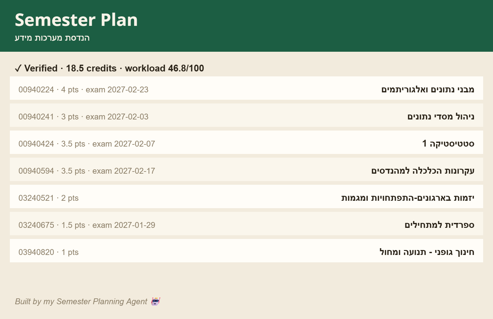
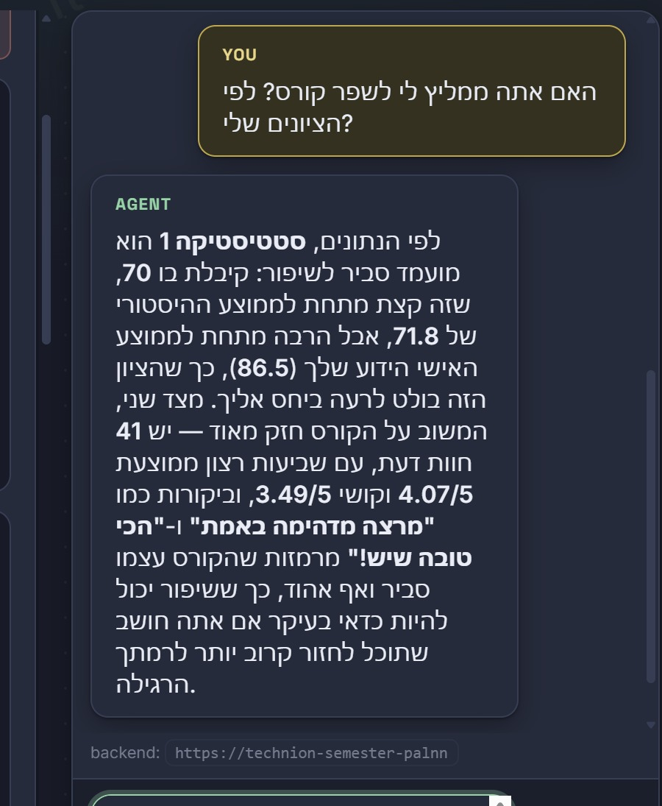
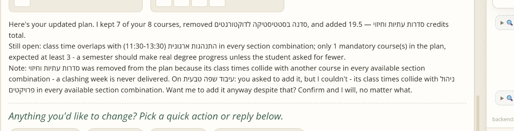
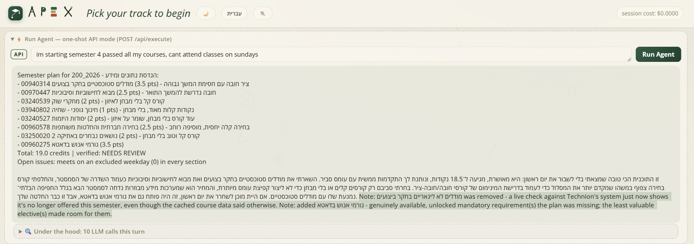

A student-facing view of the Semester Planning Agent
Live demo: https://technion-semester-palnner-agent.vercel.app
APEX is built for the messy part of semester planning: a student has passed some courses, failed others, wants a reasonable workload, may have blocked days, and still needs to make real degree progress. The agent turns that situation into a checked plan and keeps helping when the student changes their mind.
The student can write naturally in Hebrew or English. APEX extracts the semester, track, pace, passed courses, failed courses, unavailable weekdays, requested courses, grades, and any special constraints. If something important is missing, it asks for that missing detail instead of guessing.
Once it has enough information, APEX builds a plan with course numbers, course names, credits, exam dates, workload, and a short explanation of the tradeoffs. The final plan is checked by deterministic code before it reaches the student.
| Output | Why it matters |
|---|---|
| Verified course list | Courses are checked for prerequisites, duplicates, already-passed courses, unknown numbers, credit range, and mandatory progress. |
| Weekly timetable | Sections are checked so the plan does not hide class-time collisions. |
| Exam view | Moed A and Moed B dates are considered, with warnings when exams are too close. |
| Workload and risk | The plan weighs difficulty, review data, heavy-course stacking, and future impact. |
| Human explanation | The agent explains why this combination was chosen and what, if anything, is still unresolved. |
In this example, APEX produced a complete 18.5-credit semester with a moderate workload score. The student can immediately see the courses, credits, exams, and verification status.

A checked semester plan: verified, 18.5 credits, workload 46.8/100.
APEX can also answer direct questions about courses. For example, if the student asks whether a course is worth retaking to improve a grade, the answer is based on several signals together: the student's grade, the course's historical average, the student's own average, CheeseFork difficulty, satisfaction, and review text.
This matters because the same grade can mean different things for different students. A 70 can be a warning sign for a student whose average is much higher, but less important for another student whose overall average is close to 70.

The agent explains why Statistics 1 may be worth retaking, using grades, averages, and reviews.
APEX does not treat every follow-up as a brand-new planning problem. If the student asks to add, remove, or swap a course, it keeps as much of the previous plan as possible and changes only what needs to change.
When a request creates a real conflict, the agent does not silently drop the request. It explains the conflict and asks for explicit confirmation before forcing an exception.

A follow-up revision that preserves most of the old plan and clearly names the remaining conflict.
The bundled catalog is useful for fast planning, but it can become stale during registration season. Before the final answer, APEX runs a live offering check against Technion's current system.
In one live run, the cached data still showed Nonlinear Models as available. The live check found it was no longer offered next semester, so APEX removed it from the plan and filled the missing progress with an available mandatory course instead. This is exactly the kind of quiet failure a planner should catch before the student trusts the result.

Live check example: Nonlinear Models was removed because Technion's current system showed it was no longer offered.
Failed retakes are treated as high priority because they often block future courses. Grade-improvement retakes are handled more carefully: APEX can suggest one, but it does not add it silently. The student must approve it first.
Grades can come from the chat or from an uploaded transcript PDF. The system does not fetch private Technion account data.
APEX is a planning assistant, not a registration system. It does not enroll students, access private Technion accounts, or promise that cached catalog data will update by itself. When Technion publishes a new catalog, the offline pipeline should be rerun.
Future work could add focused retrieval for academic regulations, forms, and administrative guidance. The core course checks should remain deterministic because prerequisites, schedules, credits, and exam dates need exact answers.